Mosaic
reef crab
Lophozozymus pictor
Family
Xanthidae
updated
Dec 2019
Where
seen? This striking red crab is sometimes seen on our some
of our shores among coral rubble or near living reefs. At some times,
several can be seen on one trip, and then none for several months.
'Pictor' in Latin means 'painter'.
Features: Body width 8-10cm. Body
somewhat fan-shaped. It is usually red to orange with strikingly mosaic-like
patterns of large white spots. Pincers short, both about equal in size, with black tips. Walking
legs hairy with pointed tips.
Crab of Death: It
is the most poisonous crab of Singapore!
There are several documented deaths caused by eating this crab. Cooking
does not destroy the toxins. The crab is believed to obtain the toxins
from the food it eats, including a poisonous sea cucumber.
How to stay safe: Do not touch the crab. |
|
Status and threats: This crab
is listed as 'Endangered' on the Red List of threatened animals of
Singapore. |
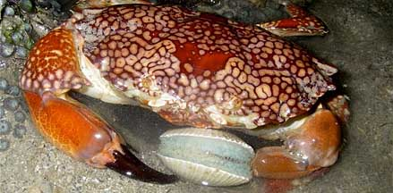
Eating a clam. Pulau Hantu, Jul 10
Photo shared by Toh Chay Hoon on her
blog. |

Pulau Semakau, Nov 09 |
| Mosaic
reef crabs on Singapore shores |
| Other sightings on Singapore shores |
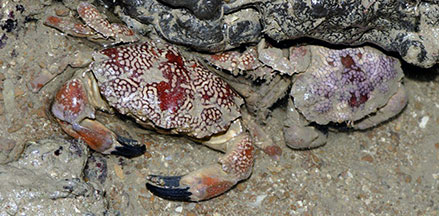
Beting Bronok, Jun 16
Photo shared by Rene Ong on facebook. |
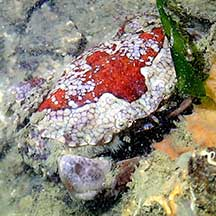
Changi Loyang, May 21
Photo
shared by Jianlin Liu on facebook. |
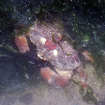
Pulau Sekudu, Jun 17
Photo
shared by Loh Kok Sheng on facebook. |
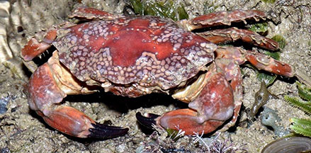
Pulau Sekudu, Jul 20
Photo
shared by Loh Kok Sheng on facebook. |
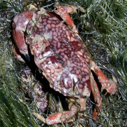
Sentosa Tg Rimau, Oct 25
Photo shared by Loh Kok Sheng on facebook. |
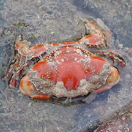
Pulau Tekukor, Jan 25
Photo shared by Liz Lim on facebook. |
|
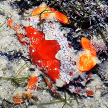
Lazarus Island, Jan 24
Photo shared by Loh Kok Sheng on facebook. |
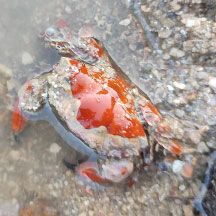
St John's Island, Jun 24
Photo shared by Tommy Tan on facebook. |
|
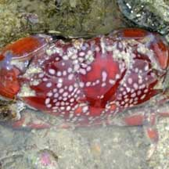
Pulau Jong, Apr 09
Photo shared by Loh Kok Sheng on his
blog. |
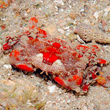
Cyrene Reef, Feb 15
Photo shared by Loh Kok Sheng on flickr. |
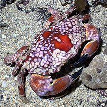
Cyrene, Jul 25
Photo shared by Tammy Lim on facebook. |
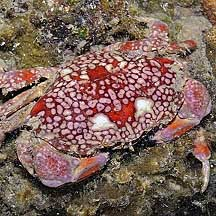
Pulau Hantu,
Jun 10
Photo shared by James Koh on his
blog. |
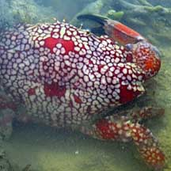
Pulau Semakau, Feb 09
Photo shared by Loh Kok Sheng on his
blog. |
|
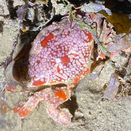
Terumbu Raya, Feb 23
Photo shared by Kelvin Yong on facebook. |
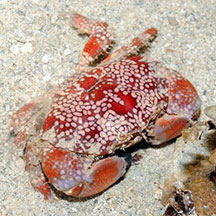
Terumbu Bemban, Jul 11
Photo shared by Loh Kok Sheng on flickr. |
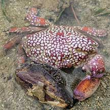
Beting Bemban Besar, Jun 21
Photo shared by Richard Kuah on facebook. |
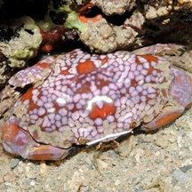
Terumbu Pempang Tengah, May 11
Photo shared by Loh Kok Sheng on his
blog. |
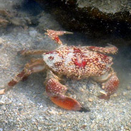
Terumbu Pempang Laut, Dec 18
Photo shared by Liz Lim on facebook. |
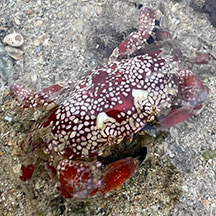
Terumbu Pempang Laut, Mar 24
Photo shared by Kelvin Yong on facebook. |
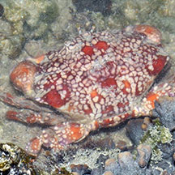
Raffles Lighthouse, Nov 16
Photo shared by Loh Kok Sheng on facebook. |
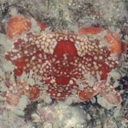
Pulau Biola, Jan 22
Photo shared by Toh Chay Hoon on facebook. |
|
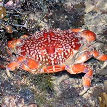
Pulau Salu, Apr 21
Photo shared by Loh Kok Sheng on facebook. |
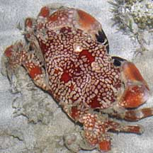
Pulau Senang, Aug 10 |
|
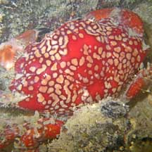
Terumbu Salu, Jan 10
Photo shared by Loh Kok Sheng h on his
flickr. |
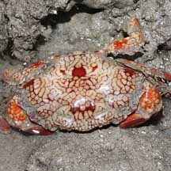
Pulau Pawai, Dec 09
Photo shared by James Koh on his
flickr. |
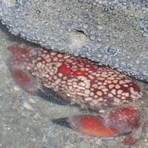
Pulau Sudong, Dec 09
Photo shared by James Koh on his
flickr. |
Links
References
- Chou, L.
M., 1998. A
Guide to the Coral Reef Life of Singapore. Singapore Science
Centre. 128 pages.
- Lim, S.,
P. Ng, L. Tan, & W. Y. Chin, 1994. Rhythm of the Sea: The Life
and Times of Labrador Beach. Division of Biology, School of
Science, Nanyang Technological University & Department of Zoology,
the National University of Singapore. 160 pp.
- Davison,
G.W. H. and P. K. L. Ng and Ho Hua Chew, 2008. The Singapore
Red Data Book: Threatened plants and animals of Singapore.
Nature Society (Singapore). 285 pp.
- Gopalakrishnakone
P., 1990. A
Colour Guide to Dangerous Animals.
Venom & Toxin Research Group, Faculty of Medicine, National
University of Singapore. 156 pp.
- Jones Diana
S. and Gary J. Morgan, 2002. A Field Guide to Crustaceans of
Australian Waters. Reed New Holland. 224 pp.
|
|
|